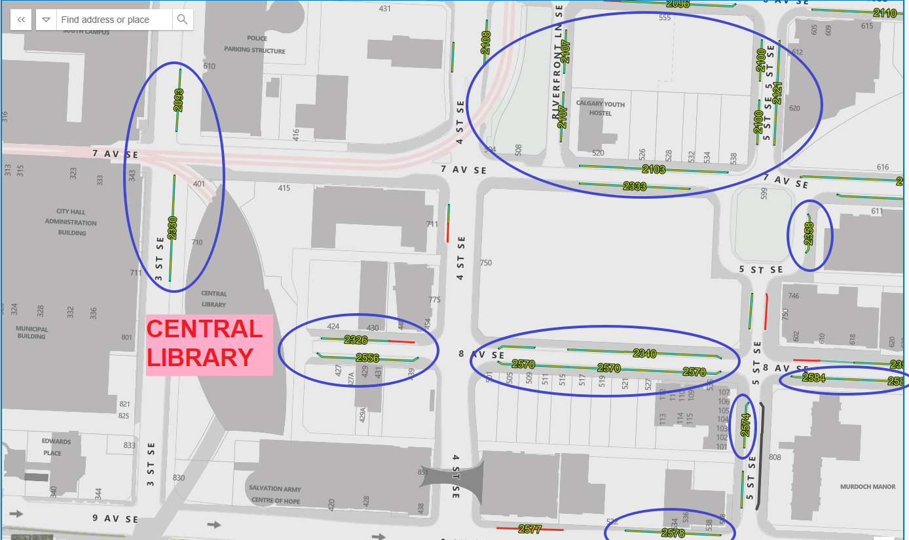
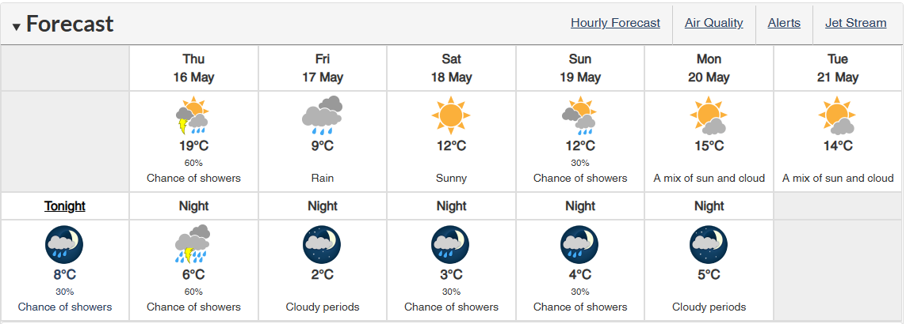

Updated as of May 15
Located atCentral Library of Calgary
800 3 St SE, Calgary, AB, T2G 2E7
Central Library Website Link
Image Source: Central Library
2024 Canadian Nationals will be at Central Library. The venue is known for its aesthetics and ease of access thanks to its location nearby a city's light-rail train station. The event will be held in the Performance Hall located on the first floor of the library.
See their HOURS & LOCATION page for the address and directions.
Patricia A. Whelan Performance Hall
Past the main entrance, the performance hall will be on your left-hand side. As you walk into the performance hall, you will see the audience seats that are placed in a slope and look down at the stage. The performance hall is equipped with over 300 seats and has enough spaces for tables with vendors and products.
Image Source: Central Library
Our walkthrough video shows how you can get to the performance hall from the City Hall station.
Parking
Street parking is available near the library and will be free on the contest day. While there are a couple of parking lots nearby, they allow parking for 2 hours maximum for $4 at a time.
Street parking is recommended.
All blue circles indicate the street parking locations. Please click on the image or the link below to open the interactive web map where you can click and check the detail for each street parking lane.
Weather Forecast
As of May 15th, it is expected that Calgary will have a temperature range that is fairly low, swinging between 12C (54F) and as low as 2C (36F) over the weekend. Some layers and a jacket will be recommended. Please click on the image or the link below to open the weather forecast page.
